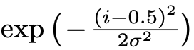
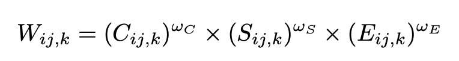
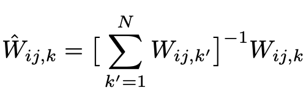
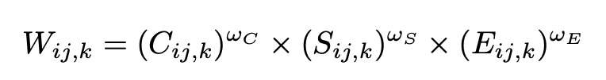
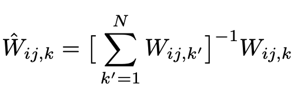

Exposure fusion (HDR) visualization
This is a step by step visualization of Exposure Fusion technique by Mertens et all in popular paper Exposure Fusion which is used for generating HDR images by merging multiple images captured at different exposures.
Input images


Weights
First for each image a weight map is computed based on objective parameters like
Contrast, Saturation & Well exposedness. The weights are computed as follows:
-
Contrast we apply a
Laplacian filter to the grayscaleversion of each image, and take the absolute value of the filter response. This yields a simple indicatorCfor contrast. -
Saturation We include a saturation measure S, which is computed as the
standard deviation within the R, G and B channel, at each pixel -
Well-exposedness We want to keep intensities that are not near zero (underexposed) or one (overexposed). We measure this based on closeless to an average intensity of
122(for 8bit values). This is measured using gaussian curve:

Contrast, Saturation and Exposure Map
processing...
Merged Map
The weights are then merged to create a single weight map using

Then the weights are normalized to fall under range


Then the weights are normalized to fall under range
[0, 1] using
processing...
Contrast map skipped for now. TODO(mebjas) fix this.
Pyramidal Merge aka Fusion
Technique by Burt and Adelson [2] is used to blend the input and weight maps into single fused HDR image. The original technique was proposed to blend tow images guided by an alpha mask and works at multiple resolution usinmg a pyramidal image decomposition.
Processing...
How is this implemented?
- This visualizer is built using
OpenCV js- https://docs.opencv.org/3.4.0/opencv.js - Laplacian of image - https://docs.opencv.org/3.4/da/d85/tutorial_js_gradients.html
- Saturation Map - Code reference
- Exposure Map - Code reference
References
- Exposure Fusion by Tom Mertens, Jan Kautz, Frank Van Reeth
- P. Burt and T. Adelson. The Laplacian Pyramid as a Compact Image Code. IEEE Transactions on Communication, COM-31:532–540, 1983